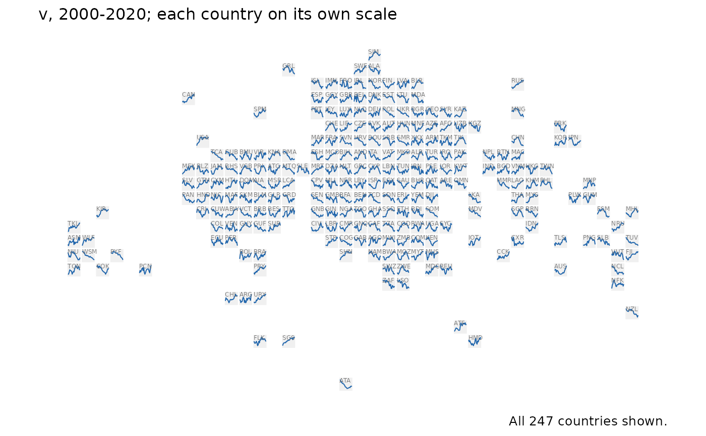

Every country's trajectory in a panel at once: a sparkline per country, placed on the bundled equal-area world_tiles grid, so Europe and the Caribbean are as readable as Russia. It is the glyph-map idea (Wickham, Hofmann, Wickham & Cook 2012) on a grid of equal cells, which removes the overlap glyphs at country centroids suffer where countries are small and close together.
Usage
tile_trend_map(
data,
value,
years = NULL,
label = TRUE,
scales = c("free_y", "fixed"),
footnote = "auto"
)Arguments
- data
A panel with
iso3c,yearand thevaluecolumn, one row per country and year.- value
The column to draw (unquoted).
- years
Optional years to draw: a range
c(from, to), or the years themselves.NULL(default) draws every year indata.- label
Whether to print each tile's ISO code (default
TRUE).- scales
"free_y"(default) draws each country on its own scale, so every line shows its own shape;"fixed"puts every country on one scale, so the lines can be compared in level as well as shape. The subtitle says which.- footnote
The caption, as in
world_map():"auto"(default) says how many countries have a line.
Value
A ggplot object. A country needs two years with values to have a
line; one with fewer, or with no tile (see world_tiles), counts as
missing in the caption and in map_provenance().
Backend
Drawn on the bundled equal-area tile grid (world_tiles), one square per country; no geometry backend is involved.
References
Wickham, H., Hofmann, H., Wickham, C. & Cook, D. (2012). Glyph-maps for visually exploring temporal patterns in climate data and models. Environmetrics 23(5), 382-393. doi:10.1002/env.2152
See also
tile_map() for one value per country, facet_map()
Examples
# \donttest{
set.seed(1)
pan <- expand.grid(iso3c = countryatlas::world_tiles$iso3c, year = 2000:2020)
pan$v <- stats::ave(stats::rnorm(nrow(pan)), pan$iso3c, FUN = cumsum)
tile_trend_map(pan, v)

# }